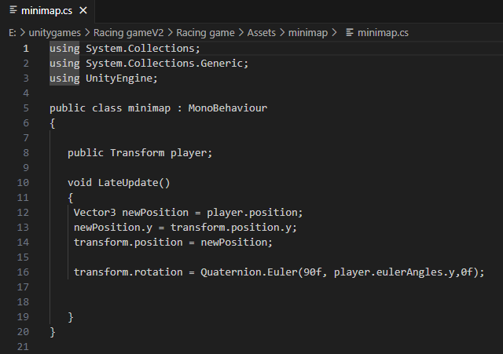

Project details
Drift racers project:
Description of the project:
Drift racers was a game project that aimed to create a prototype for a race against time car game.This prototype was created using unity and the language c++:
Team formation:
This project took place from january 22nd 2024 to april 19th 2023 so around 3 months from the teams formation to delivering a suitable prototype for the project.The team name we decided on was Awesome Gnome Softworks and was made of 4 people myself christopher jones who was incharge of communications, the minimap , all menus and the level management development and implementation throughout the game.
Jude who was our project leader and in charge of designing and creating the map, creating and implementing the car script and in charge of implementing relevant sound effects. Josh who was in charge of creating and developing a lap system, creating checkpoints where necessary throughout the maps. and in charge of creating the timer that the player had to beat.
Tom who was in charge of creating all of the car models and other relevant particles on the tracks. Most of the team's communication took place in discord as it was an easy way to transfer files and provide updates to the whole team.
Menus:
As mentioned above I was in charge of the creation and development of all of the menus. These include the main menu, the map selection menu, car selection menu and the pause menu.
Main menu
This is the main menu. It has 3 buttons on it, the first one asking the player if they want to play the game which will then lead them to the map selection menu.
The 2nd button will load a previous game in the event a player had to leave mid round. The 3rd button is to quit out of the game.

Map selection menu
This menu has 4 options of maps that the player can pick from; however only the first map was designed and developed within the time frame for this project.
It has a yellow background but once you hover over a map button it will display a preview of the map.

Car selection menu
This menu has no background to allow for the cars to be displayed. On this menu there are three buttons, one to pick the next car in the line up,
one to select the previous car and one called select which chooses the car the player wants.
The pause menu
This menu opens when you press esc on the keyboard and will freeze the timer and present 3 buttons.
The first button will unfreeze time and resume the game,
the second button will return the player to the menu and the third button will close the game.
Mini map:
As mentioned above I was in charge of the mini maps creation. The mini map worked by taking a camera that was above the player car and directing it down at the player car but by also zooming out a lot to give the player a better view of the upcoming track.
The camera followed the player at the same speed as the player to keep it consistent.

Mini-map
This is what the mini map looks like. it’s an overhead camera that gives the player a look at the obstacles ahead.

Map selection menu
This is the code that allows the mini map camera to follow the player no matter what speed they are going at.
Mini-map-render
This is the unity fuction that takes what the camera sees and displays it as a raw image that can be displayed on the screen for the player.
Mini-map-unity
This is the unity function that keeps the raw rendered image in the circular format that we wanted for the project.
Mini-map-setting
this is the main canvas that keeps all of the files of code and other settings for the minimap and it also includes all of the renders that where used in its creation.